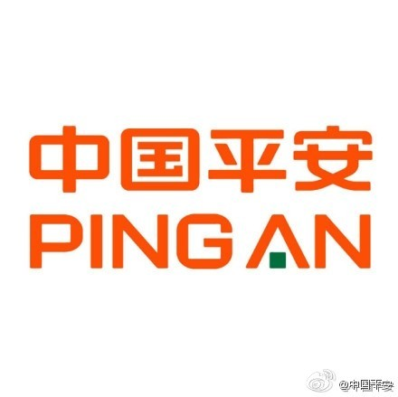

只买了这一家公司的股票，当养老金放着了。//@李驰:我可以看不懂一个公司的一段时期的股价，我这辈子还真没有看错过一个公司的长期利润趋势。金子埋没再久，终将先后被智者与傻子发现@中国平安:【中国平安一季度归属于母公司股东净利润108.09亿元 增长46.2%】14年第一季度，中国平安实现净利润129.93亿元，同比增长41.7%;归属于母公司股东的净利润108.09亿元，同比增长46.2%;归属于母公司股东权益为1,935.86亿元，较年初增长6.0%；公司总资产达3.66万亿元，较年初增长9.0%。网页链接 